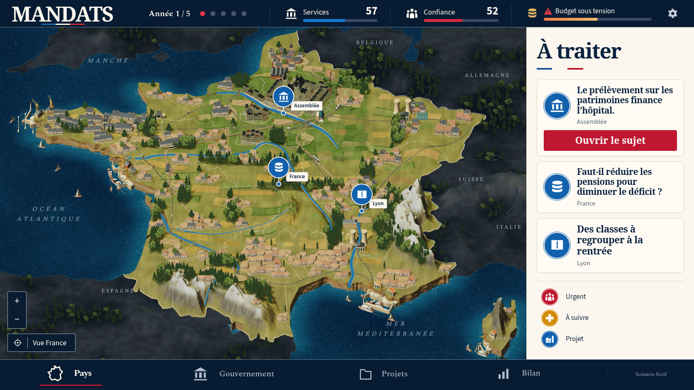
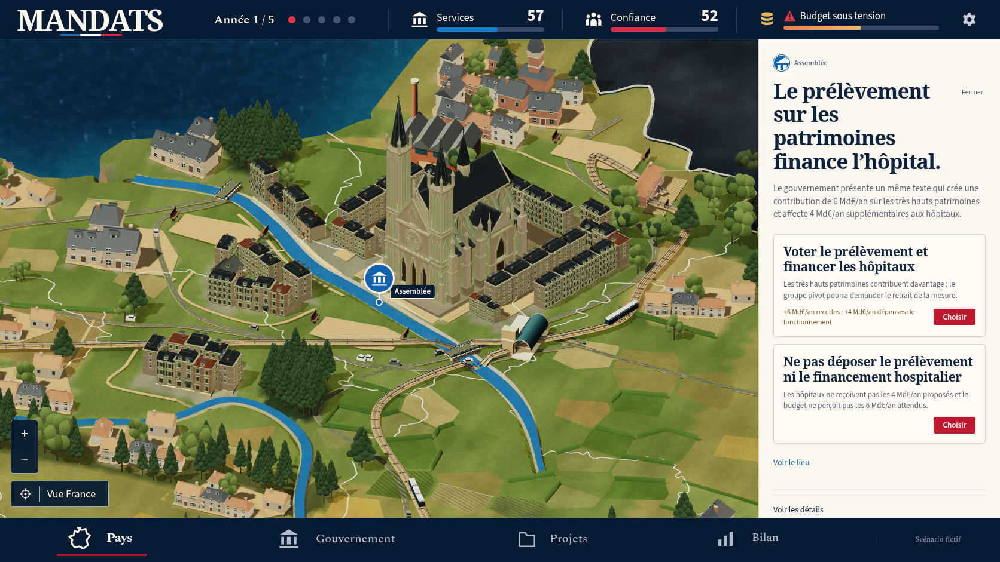
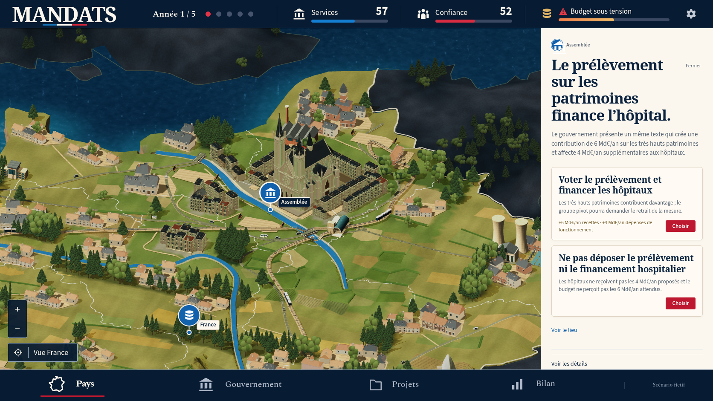
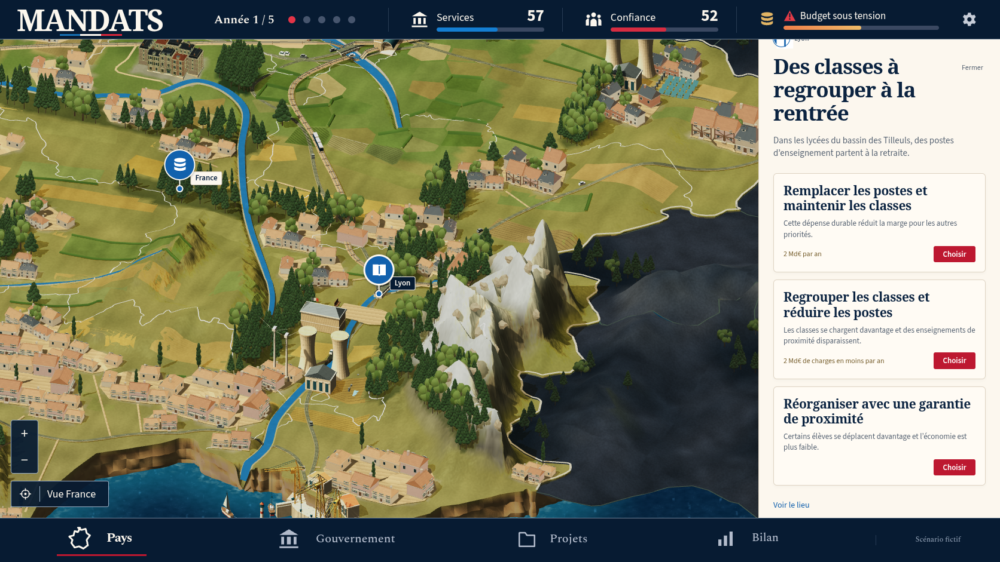

Passe 12b : fidélité artistique non conforme
La référence confirmée et le jeu réel
Ces cinq captures proviennent du jeu réel exécuté le 9 octobre 2026 dans Chromium 151.0.7922.173, à 1 672 × 941, avec les polices chargées et les animations réduites. La partie nationale utilise la version 12, la graine 0 et l’ambition équilibre. Aucune décision n’a été prise pendant les inspections.
Le résultat reste un état intermédiaire, artistiquement non conforme à la maquette confirmée. L’interface s’en rapproche, mais la composition, les quartiers, le relief et les matières présentent encore des différences majeures.
Les deux vues nationales utilisent le même cadre de présentation, au ratio 1 672 × 941. Chaque image s’ouvre à sa résolution originale en cliquant dessus. Les inspections complètent la comparaison ; elles ne constituent pas d’autres maquettes.
Bilan des sept vues enregistrées : aucune erreur de navigateur, requête échouée ou réponse HTTP en échec enregistrée. Ce constat technique ne valide pas la fidélité artistique. Les JSON de chaque vue documentent les actions natives ; aucune caméra ni valeur de partie n’a été injectée.
Référence confirmée

Vue nationale du jeu

Vue initiale, sans action. L’année 1, les scores 57 et 52 ainsi que les trois sujets bleus proviennent de la vraie partie ; ils diffèrent légitimement des exemples de la maquette.
Capture réelle à 00:00:53 UTC. Fidélité artistique non conforme.
Conditions et actions de capture · Entrées de partieInspections du jeu réel
Ces vues ont été obtenues en ouvrant les vrais sujets, en utilisant Voir le lieu et les contrôles de caméra. Les fichiers JSON associés conservent le navigateur, le cadrage et la séquence exacte des actions.
Paris


Les façades et les cours sont lisibles. Le monument domine encore fortement les îlots, les toitures sont très sombres et les quartiers restent séparés par de grandes surfaces ouvertes.
Sujet Assemblée, puis Voir le lieu. Aucune décision.
Conditions de l’inspection de Paris · Entrées de partieSeine et berges


Les ponts et voies sont présents. Le cours d’eau conserve une teinte cyan et des segments anguleux ; ses berges ne retrouvent pas encore la continuité bâtie et paysagère de la référence.
Inspection de Paris élargie avec Réduire la carte. Aucune décision.
Conditions de l’inspection des berges · Entrées de partieLyon et Alpes


La neige et le volume des sommets sont visibles. Les longs flancs lisses et les rochers isolés diffèrent des faces rocheuses fragmentées de la maquette. Le haut de l’étiquette du sujet est coupé dans cette capture après le défilement du panneau.
Sujet des lycées, Voir le lieu, puis Réduire la carte. Aucune décision.
Conditions de l’inspection du relief · Entrées de partieRetour à la vue nationale

Le cadrage national et l’agenda sont retrouvés après les inspections. Les sujets, indicateurs et nombre de décisions conservent leur état initial.
Recentrer, puis Fermer le sujet. Aucune décision.
Conditions du retour à la vue nationale · Entrées de partieDifférences majeures constatées
- Composition et continuité urbaine. La vue du jeu reste plus plongeante. Les îlots sont isolés, les routes traversent de grands espaces ouverts et la Corse comporte peu de constructions. La référence présente une miniature dense où villes, places, quais et jardins se prolongent les uns dans les autres.
- Plaines et arrière-plan. Les surfaces ouvertes et les parcelles en patchwork dominent encore. Les bois forment des groupes disjoints ; l’arrière-plan reste gris et peu détaillé. La référence alterne cultures, prairies, bocage, villages et reliefs dans toute la composition.
- Relief et littoral. Les sommets possèdent encore de longs flancs lisses et les côtes des bandes rocheuses régulières. La référence montre des versants fragmentés, des contreforts variés et des falaises sculptées visibles depuis la vue nationale.
- Matières, eau et lumière. Les toitures parisiennes très sombres, la pierre gris vert et les rivières cyan anguleuses restent éloignées de la référence. Celle-ci associe des bâtiments plus chaleureux, des cours d’eau bleus intégrés aux berges et des ombres plus expressives.
Le chargement d’une image, la compilation et l’absence d’erreurs de navigateur ne sont pas des validations de fidélité artistique.
Interface et vraies données de partie
Le cadre de la capture correspond à la référence : carte de 1 268 × 801, en-tête de 66 pixels et pied de page de 74 pixels. Le titre À traiter, le logo et les positions du footer sont proches. Les titres des vrais sujets restent entiers, un seul bouton Ouvrir le sujet est affiché et les trois lignes de légende sont visibles.
| Élément | Référence | Capture 12b |
|---|---|---|
| Icône Pays | x 115, 37 × 36 | x 115, 37 × 38 |
| Texte Pays | x 179, 40 × 21 | x 179, 41 × 19 |
| Barre Services | x 753, largeur 154 | x 730, largeur 180 |
| Barre Confiance | x 1 040, largeur 153 | x 1 021, largeur 180 |
Les deux barres ont été recalées dans le CSS desktop après cette capture. Ces images conservent l’état 12b antérieur à cette correction ; elles ne prouvent pas son rendu final. Le footer est conservé.
L’année, les scores et les sujets sont des données de la partie. Les trois sujets bleus ne sont pas urgents dans cet état ; aucune urgence n’a été ajoutée pour reproduire les exemples de la maquette. Le libellé Projet de la légende reste ambigu pour les sujets nationaux bleus. Les flèches et chevrons de la maquette sont absents conformément aux contraintes du propriétaire.
Cette page documente le desktop. Les formats mobiles nécessitent leurs propres captures et vérifications.